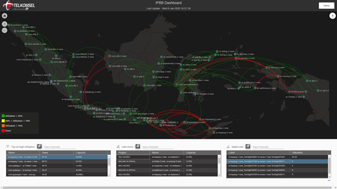

Background
Network monitoring in terms of routers if a link-down occurs on a router, there will be a notification from the dashboard of IPBB that the linkdown condition and notify the cause and other routers affected by the core router. Then, displaying the top 10 high utilization routers from all over Indonesia
Objective
In this Project the Main Objectives that needs by Telkomsel Directorate. Such as
- Provides dashboard visualization with Monitoring All over Indonesia This dashboard is based on an auto-discovery algorithm that supports rooting
- router technology that experiences link-downs and other routers.
- Provides Alarm Data Presentation for all core / back-bone routers with a fifth of a five minute granularity

Impact of the Dashboard to monitor utilization, link down, router performance and export data. This shows all backbone routers in all of Indonesia.